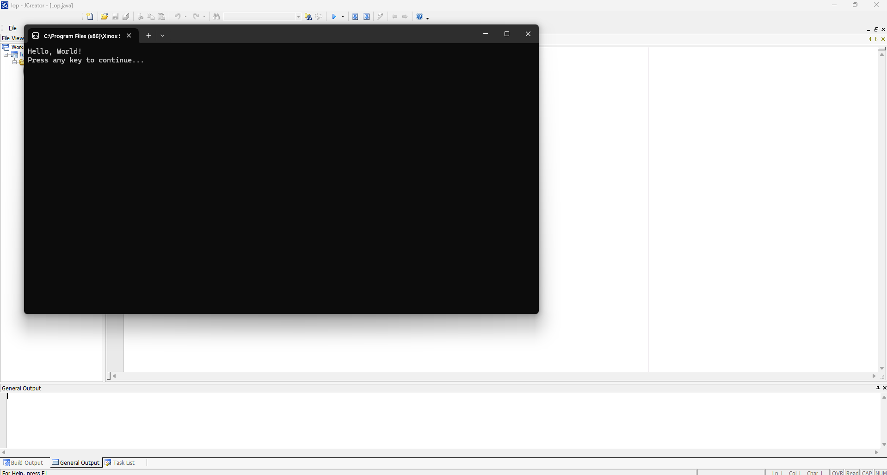

Welcome to Code Bee!
Code Bee is designed to help students and users gain in-depth knowledge of programming, focusing on Java and VB.NET. This platform provides interactive lessons, coding challenges, and a practical environment to improve problem-solving skills and confidence.
Why Learn with Code Bee?
Code Bee enhances your coding skills by providing a structured and hands-on learning experience. Whether you're a beginner or looking to refine your skills, our lessons ensure you grasp key programming concepts in a fun and interactive way.
Why Learn Java?
Java is one of the most popular programming languages in the world. Here’s why you should learn it:
- Versatility – Used in web apps, mobile apps, desktop applications, and enterprise systems.
- Platform Independence – Java runs on any system with a Java Virtual Machine (JVM).
- High Demand – Java developers are sought-after in tech, finance, and many other industries.
- Community Support – Millions of developers worldwide share resources, tutorials, and tools.
- Android Development – Java is a core language for Android app development, opening the door to mobile innovation.
Get Started
Begin your coding journey with Code Bee and unlock endless opportunities in software development! Dive into our comprehensive lessons, tackle coding challenges, and watch your programming expertise soar.
Java Editor
This is where the Java editor interface would appear.
Lesson 1: Introduction to Java
Project Setup Tutorial
- Step 1: Open JCreator on your computer.
- Step 2: Click File → New → Project and select Basic Java Application.
-
Step 3: Enter a Project Name (e.g.,
MyFirstProgram) and click Finish. - Step 4: Right-click your project folder in the File View and select New → Java File.
-
Step 5: Name the file (e.g.,
HelloWorld) and click Finish.
Introduction to Java
Java is a versatile and powerful programming language used to develop everything from mobile apps to enterprise systems. In this lesson, you’ll set up a project and write your first line of code.
Displaying Text on the Screen
To print text on the screen, use the following command:
System.out.println("Hello world");
Compile your code with F7 and run it with F5.
Expected Output
Declaring Variables in Java
-
Understanding Variables: Variables act as containers that hold data values.

-
Syntax: Use the format:
dataType variableName = value; -
Example – Integer:
int age = 20; -
Example – Double:
double pi = 3.14; -
Example – String:
String name = "Alice"; -
Complete Program Example:
public class Main { public static void main(String[] args) { int age = 20; double pi = 3.14; String name = "Alice"; System.out.println("Age: " + age); System.out.println("Pi: " + pi); System.out.println("Name: " + name); } }
Lesson 2: if,Scanner,Boolean,While Loop and For Loop
Lesson 2 - Topic 1: Java Scanner Example in JCreator
This section demonstrates how to use the Scanner class in Java to receive user input in a console application using JCreator.
Java Code

import java.util.Scanner;
public class Lop {
public static void main(String[] args) {
// Create a Scanner object to read input from the keyboard
Scanner enter = new Scanner(System.in);
int a, b, diff;
// Prompt the user to enter the first number
System.out.print("Enter value for a: ");
a = enter.nextInt();
// Prompt the user to enter the second number
System.out.print("Enter value for b: ");
b = enter.nextInt();
// Calculate the difference between a and b
diff = a - b;
// Display the result
System.out.println("The difference between these numbers is: " + diff);
// Close the scanner
enter.close();
}
}
How the Scanner Works
The Scanner class is used to read user input from the keyboard. Here’s a brief explanation of the key points:
- Creating a Scanner:
Scanner enter = new Scanner(System.in);initializes a scanner to read from the standard input. - Reading an Integer:
enter.nextInt();waits for the user to input a number and then reads it. - Closing the Scanner: It is a good practice to close the scanner with
enter.close();when done.
Using Java in JCreator
- Create a New Project: Open JCreator and start a new Java project.
- Add a New Class: Create a new class (for example,
Lop.java) and paste the above code into it. - Compile the Code: Use the compile button to compile your code and check for any errors.
- Run the Program: Run the application. The console will prompt you for input as specified in the code.
Expected Output and Image Placeholders
Step 1: Prompt for Value of a

When the program runs, it displays: Enter value for a:. For example, if the user enters 10, this value is stored in variable a.
Step 2: Prompt for Value of b

Next, the program displays: Enter value for b:. If the user enters 20, this value is stored in variable b.
Step 3: Displaying the Result

The program calculates the difference using diff = a - b. For the inputs (10 and 20), the result is -10, which is then printed to the console.
Follow these steps to understand and use the Scanner class in your Java programs with JCreator.
Lesson 2 - Topic 2: If Statements - High and Low
In this section, we'll explore how the if statement works in Java. The if statement evaluates a condition and executes its block of code only if that condition is true.
Below are two examples demonstrating the if statement: one for a low scenario and another for a high scenario.
How the if Statement Works
The if statement checks a condition:
- If the condition is true, the code inside the block executes.
- If the condition is false, the code inside the block is skipped.
Example: Low Scenario
Code for Low
public class Lop {
public static void main(String[] args) {
int diff, a = 8, b = 8;
diff = a - b;
if (diff > 10) {
System.out.println("HIGH");
}
if (diff < 10) {
System.out.println("LESS");
}
}
}

Output for Low Scenario

In the low scenario, both a and b are 8, so diff is 0. The condition if (diff > 10) is false and is skipped, while if (diff < 10) is true, so the program prints LESS.
Example: High Scenario
Code for High
public class Lop {
public static void main(String[] args) {
int diff, a = 20, b = 8;
diff = a - b;
if (diff > 10) {
System.out.println("HIGH");
}
if (diff < 10) {
System.out.println("LESS");
}
}
}

Output for High Scenario

In the high scenario, a is set to 20 and b remains 8, so diff becomes 12. The condition if (diff > 10) is true, so the program prints HIGH, and the second condition if (diff < 10) is false.
This demonstrates how conditional execution works in Java using the if statement.
Lesson 2 - Topic 3: While Loop
The while loop in Java repeatedly executes a block of code as long as a specified condition is true.
Below is an example that prints your name multiple times.
Code Example

import java.util.Scanner;
public class Whiop {
public static void main(String[] args) {
Scanner enter = new Scanner(System.in);
int ctr = 0;
while (ctr < 10) {
System.out.println("Your Name");
ctr = ctr + 1;
}
// Always close the scanner if you're done using it
enter.close();
}
}
Explanation of the code:
- int ctr = 0; initializes the counter variable.
- while (ctr < 10) is the condition. The loop runs as long as
ctris less than 10. - System.out.println("Your Name"); prints "Your Name" each time the loop runs.
- ctr = ctr + 1; increments
ctrby 1 on each iteration, ensuring the loop eventually stops.
Output

The program prints "Your Name" 10 times on separate lines in the console.
Lesson 2 - Topic 4: For Loop
The for loop in Java is often considered more convenient than a while loop when you know in advance how many times you want the loop to run.
It combines initialization, condition checking, and increment/decrement in one line.
Code Example

for (int c = 0; c < 10; c++) {
System.out.println("Your Name");
}
Explanation of the code:
- Initialization:
int c = 0;sets the counter to 0. - Condition:
c < 10means the loop runs as long ascis less than 10. - Increment:
c++increasescby 1 on each iteration. - Body:
System.out.println("Your Name");prints "Your Name" on each loop iteration.
Because all three elements (initialization, condition, and increment) are in one line, it's generally more concise and easier to read than a while loop for situations where the number of iterations is known.
Output

This program will print "Your Name" 10 times in the console, each on its own line.
Lesson 3: Introduction to Applet:
Applet Tutorial: How to Create a Java Applet
-
Step 1: Create a folder named
Javaon your Desktop or inside your preferred directory. This folder will store all your Java projects. - Step 2: Open JCreator on your computer.
-
Step 3: Click file => new => Blank WorkSpace. In the blank workspace of JCreator, locate the
Javafolder you created. - Step 4: Right-click in the blank workspace (or in the File View where your folder is visible).
- Step 5: From the context menu, select Project → Basic Java Applet.
- Step 6: Compile your project to ensure there are no errors.
Lesson 3 - Topic 1: Label Example in a Java Applet
In this topic, we explore how to use a Label in a Java Applet. The code demonstrates how to calculate the sum of three integers and display the result using a Label.

Explanation
The code starts by importing java.awt.* and java.applet.*. These packages are essential for creating graphical components and applets.
A Label named lblsum is declared and initialized as an empty label. Inside the init() method:
-
Three integer variables
a,b, andcare declared and assigned values. - The sum of these variables is calculated.
-
The
setText()method updates the label to display the sum. -
Finally, the label is added to the applet using the
add()method, making it visible when the applet is loaded.

The output will show a label displaying the calculated sum, such as "the sum is: 7".
Lesson 3 - Topic 2: Creating and Using a Button in a Java Applet
In this topic, we'll learn how to add a button to a Java Applet, attach an action listener to it, and manage its behavior using the paint and actionPerformed methods.
Code Overview

Explanation
-
Importing
java.awt.event:
This import statement is essential because it brings in the classes and interfaces needed for event handling. For instance,ActionListenerandActionEvent—which enable the applet to detect and respond to button clicks—are part of this package. -
Declaring the Button:
The declarationButton bHello = new Button("Click me");creates a new button object with the label "Click me". This object is what users will interact with on the applet. -
Adding the Button and Setting the Action Listener:
In theinit()method, the button is added to the applet withadd(bHello);. Immediately after,bHello.addActionListener(this);registers the current applet instance as the event listener for the button. This means that when the button is clicked, the applet'sactionPerformedmethod will be called. -
The
paint(Graphics g)Method:
Thepaintmethod is automatically called by the system to render the applet. In this example, it's used to set the button's location on the screen withbHello.setLocation(10,50);. This positions the button at 10 pixels from the left and 50 pixels from the top of the applet window. -
The
actionPerformed(ActionEvent e)Method:
This method is required by theActionListenerinterface. It defines what happens when an action event occurs—such as when the button is clicked. Here, it changes the label's text to "How you Doing?" and resizes the label to accommodate the new text.
Output


Initially, the applet displays the button at the specified location without any label text. After clicking the button, the actionPerformed method is invoked, updating the label to display "How you Doing?".
Lesson 3 - Topic 3: Text Fields in a Java Applet
In this lesson, we explore how to use TextField components in a Java Applet to capture user input. The applet demonstrates the following:
- Displaying text fields for entering a name and an age.
- Using
getText()to retrieve the user’s input. - Updating a label with the input data when a button is clicked.
- Positioning components within the applet using the
paint()method.

Output Examples
Output 1: The initial applet display with empty fields and no greeting.

Output 2: The applet viewer showing the text fields pre-filled with "Bob" as the name and "18" as the age.

Output 3: After clicking the button, the label updates to display: Hello Bob Your age is: 18.

Explanation
-
TextField Components: Two text fields (
txtNameandtxtAge) allow the user to input their name and age. The numbers (30 and 5) in their constructors specify their width in columns. -
Retrieving Input: In the
actionPerformedmethod, thegetText()method is used to obtain the text entered by the user in each text field. -
Updating the Label: When the button (
btnShow) is clicked, theactionPerformedmethod concatenates the inputs into a greeting message and updateslblgreetusingsetText(). The label is then resized to fit the new text. -
Component Positioning: The
paint(Graphics g)method is used to set the location of the components. For example,lblgreet.setLocation(10,100);positions the greeting label at the coordinates (10, 100) in the applet.
Lesson 4: Object-Oriented Programming
Understand the principles of object-oriented programming in Java, including classes, objects, inheritance, and polymorphism.
Lesson 5: Exception Handling and File I/O
In this lesson, you'll learn how to handle exceptions in Java and perform file input/output operations.